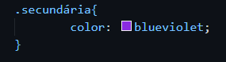
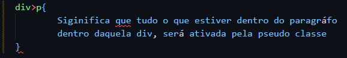
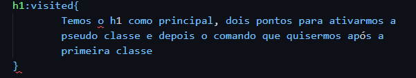

Para criamos uma estilização única de tags iguais, usamos um identificador "um id". Devemos colocar id em frente a tag desejada para criamos o identificador. Devemos lembrar que o identificador ele é ÚNICO e não pode ser repetido na mesma página HTML, somente em páginas diferentes.
Exemplo:
Usando identificador no css:
Para usarmos o identificador na página de css, usamos a tralha # para estilizar o item com identificador.
Exemplo: 
A tag "class" nos permite usar um "identificador" em um grupo de tags, mas para isso usamos em frente a tag desejada a palavra class.Podemos também usamos duas classes na mesma tag apenas colocando espaço para separa-las.
Exemplo: 
Usando classe no css:
Para usarmos uma classe no css, usamos o ponto . para estilizar com a classe no css.
Exemplo: 
O uso da pseudo classe, ela age como uma classe secundária podendo usar junto com a classe principal. Geralmente ela vem acompanhada com um > o que siginifca que tudo que está dentro daquela tag, será como uma classe secundária.
Exemplo: 
Usando pseudo classe no css:Para usarmos uma pseudo classe no CSS, ela sempre será escrita como secundária, porém ativada por : (dois pontos)
Exemplo: 
Na hierarquia de comando, temos algumas sobreposições, sendo elas: